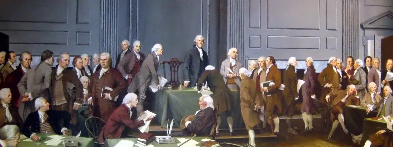

This led to controverversial debate between the two sides.
According to James Madison, who recorded many of the proceedings of the Constitutional Convention:
“the States were divided into different interests not by their difference of size, but principally from their having nor not having slaves … It did not lie between the large and small States: it lay between the Northern and Southern.”
debate during the constitutional convention
As the framers discussed issues such as the international slave trade and slaves' inclusion in calculating representation, many southerners were not willing to give up ground and weaken slavery.
John Rutledge claimed that the southern states “will never be such fools as to give up so important an interest,” and that if the federal government imposed controls on slavery, the southern states "shall not be parties to the union."
Knowing that they needed southern support to finish the document and ratify it, the framers decided that satisfying the South was necessary for the Union's future.
the signing of the constitution
Many delegates at the Constitutional Convention stated that the document would not have been approved without protections on the slave trade. Abraham Baldwin, a delegate from Georgia, claimed that the decision to remove slavery from the influence of the North was an essential agreement, and that any attempt to change it would result in the dissolution of the Union.
A lot of the framers believed that protections on slavery were acceptable, as there was an expectation that the institution would be ended in the long run.
What would be the consequences of the silence? Check out The Future!